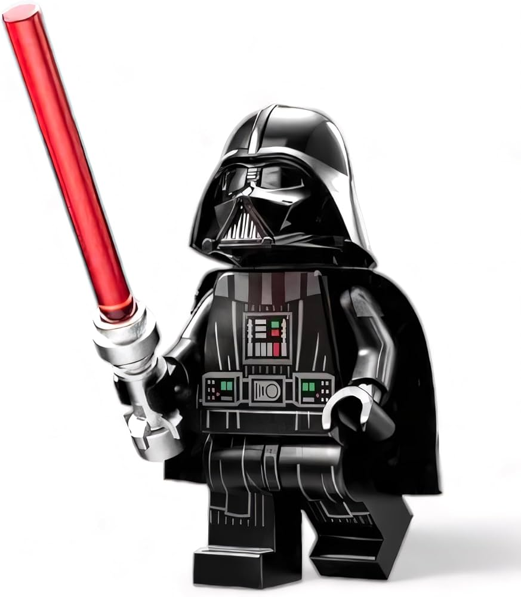

Darth Vader is one of the most recognizable villains in the Star Wars story. Before becoming Darth Vader, he was a Jedi named Anakin Skywalker who fought during the Clone Wars. Anakin eventually turned to the dark side of the Force and became Darth Vader after joining Emperor Palpatine. He then became one of the most powerful and feared members of the Galactic Empire.
In LEGO Star Wars, Darth Vader usually appears wearing his famous black armor, helmet, and cape. His LEGO minifigure also normally comes with a red lightsaber to represent his connection to the dark side. There have been several different versions of the Darth Vader minifigure released in LEGO sets over the years. He is also an important character in the LEGO Star Wars video games and appears in many levels based on the movies.
Darth Vader is extremely powerful with the Force and is known for fighting against the Rebel Alliance. One of the biggest moments in his story happens when he reveals to Luke Skywalker that he is actually Luke's father. Even though Vader spends many years serving the Empire, he eventually chooses to save his son from Emperor Palpatine. This decision brings Anakin Skywalker back to the light side of the Force at the end of his life.